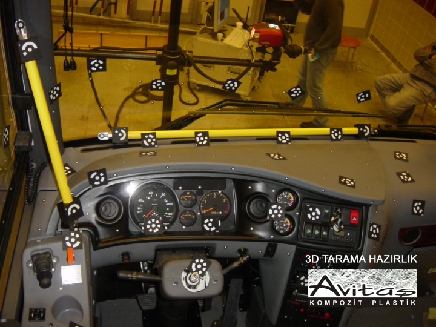
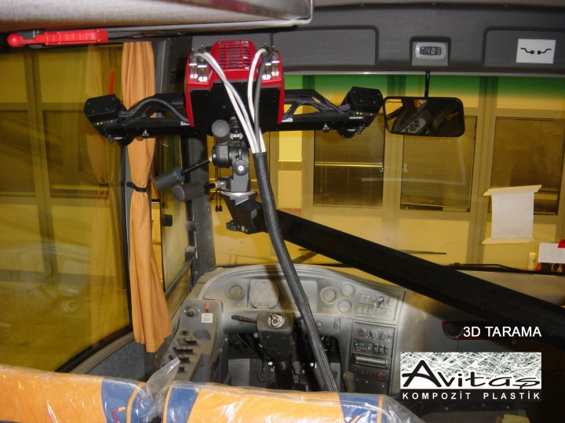
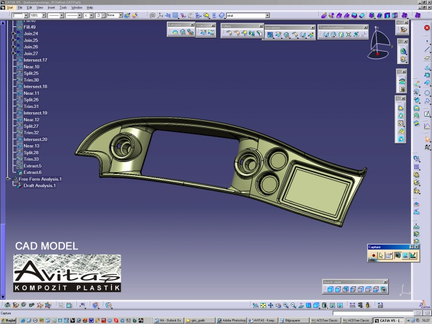

|
Gürhan Paþolar
Makine Müh.
Avitaþ Kompozit Plastik A.Þ.
Þubat 2006, Ýstanbul
Not: Orijinal olarak TurkCADCAM.net
Dergisi 2. Sayýsý için hazýrlanmýþ bu
makale, ilk kez Eylül 2007'de (yeni ek resimlerle birlikte) TurkCADCAM.net Portalý'ndan
yayýnlanmaya baþlamýþtýr.
Otomotiv sektöründe yan sanayinin yeri her geçen gün daha çok önem kazanmaktadýr. Günümüzde kendilerine ve ana sanayiye deðer katan yan sanayi firmalarý artýk yeni bir projenin paydaþý olarak deðil, projenin asýl sahibi olan firmalardan oluþmaktadýr. Eski anlayýþla, tüm tasarým yapýldýktan sonra parçanýn üretim yönteminin ve üreticisinin belirlenmesi yaklaþýmý artýk beklentileri karþýlayamamaktadýr. Ana sanayi tarafýndan tasarým yapýldýktan sonra bu ürünü en ucuza üretecek olan yan sanayinin üretici olarak seçilmesi üretim maliyetlerini düþürse de toplam proje maliyetlerini yukarýya çekmektedir. Bu da yeni bir projeyi devreye alma sýrasýnda tüm süreci tek elden yönetebilecek çözüm ortaklarý bulma ihtiyacý doðurmaktadýr.
Avitaþ olarak 4 sene kadar önce firma bünyesinde kurduðumuz Tasarým Geliþtirme departmaný ile otomotiv ana sanayi için çözümler üretmekteyiz. 36 senelik tecrübe ile yönetilen bu departmanda CATIA tabanlý çalýþmalarýmýzla ana sanayi firmalarýnýn tasarýmdan seri üretime kadar olan süreçte her türlü ihtiyacý karþýlanmaktadýr. Tasarým eskizlerinin oluþturulmasýndan matematik model oluþturmaya, prototip ürün üretiminden seri üretime kadar olan tüm adýmlarda ayný çatý altýnda hizmet verilmektedir. Çalýþmalar bazen mevcut aracýn CAD modelleri üzerine yeni parçalara uygun matematik modeller oluþturularak yapýlýrken, bazen de eski versiyon araçlara yapýlan yeni tasarýmlarda tersine mühendislik ile yapýlabilmektedir.

3D tarama için hazýrlýk
Tersine mühendislik uygulamasý genelde tasarým aþamasýnda matematik modeli oluþturulmamýþ yüzeyler için yapýlmaktadýr. Ancak, 3 boyutlu CAD modelden üretilmiþ fakat montaj sýrasýnda þekil deformasyonuna uðramýþ yüzeyler için de tersine mühendislik uygulamasý kullanýlmaktadýr. Bunun için bitmiþ ürün, araç üzerindeki haliyle 3 boyutlu tarayýcýlarla taranýp, belli proseslerden geçirilerek 3 boyutlu yüzey modeli haline dönüþtürülmektedir. Bu tarama iþlemi mevcut araca yeni parça tasarlamak için kullanýldýðý gibi, mevcut bir parçanýn tasarýmýný deðiþtirmek için gerekli olan 3 boyutlu ortamý oluþturmak için de kullanýlabilmektedir.

3D optik tarama
Avitaþ olarak son dönemde ISUZU Turkuaz modeli için ürettiðimiz Torpido Gösterge Paneli, tasarýmýn ana sanayi tarafýndan tamamlanmasýnýn ardýndan üretim aþamasýnda katýldýðýmýz bir projedir. Parçanýn devreye alýnma aþamasýnda, mevcut parça geometrisinin oluþturulmasý bakýmýndan çok uygun bir üretim yöntemi olmamakla birlikte, kalýbýn kýsa sürede üretilebilmesi avantajýndan dolayý el yatýrmasý olarak üretime baþlanmýþtýr.
Farklý ters açýlardan dolayý yaklaþýk 0,5 m2 yüzey alanýna sahip bu parçanýn kalýbý 3 parçalý olarak tasarlanýp üretildi. Üzerine hava nozulleri, kumanda paneli gibi parçalarýn baðlandýðý kompleks geometrilere sahip bu Gösterge Paneli, aracýn ön kýsmýndaki ön göðüs, torpido, kilometre saati gibi parçalarý ve bu parçalarýn taþýyýcý yapýlarýný birbirine baðlayacak bir tamamlayýcý parça görevini görmektedir. Dolayýsýyla parça üzerinde boyutuna göre çok fazla miktarda baðlantý elemaný bulunmaktadýr. El yatýrmasý teknolojisi ile parçaya lamine edilen bu baðlantý elemanlarýnýn gerek konumlarý gerekse fonksiyonelliði, araca montaj sýrasýnda beklentileri karþýlamakta yetersiz kaldý. Ayrýca açýk kalýpta üretilen el yatýrmasý ürünlerin manuel olarak trimlenmesinden dolayý araç þoförlerinin her zaman gözünün önünde olan bu parçadaki görsel beklentileri karþýlamakta da zaman zaman yetersizlikler gözlendi...

3D CAD model (CATIA)
|